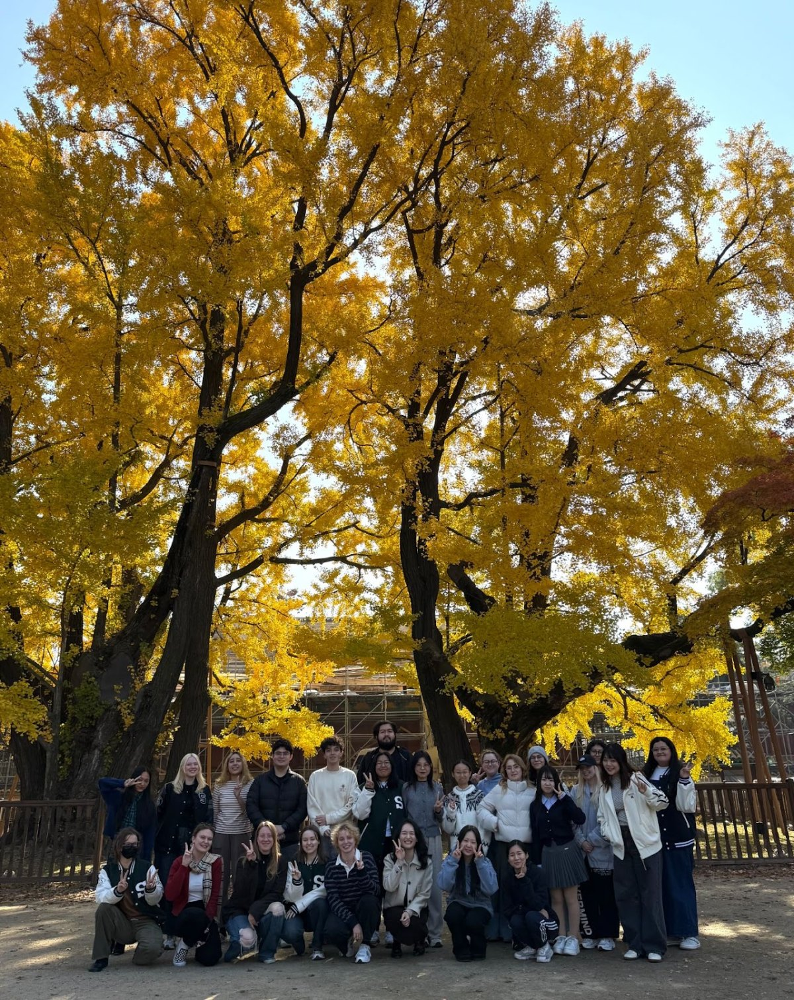

Teaching & Projects
Teaching
- Fall 2025 – Spring 2026Korean Literature in Global Literature(세계문학으로서의 한국문학)Sungkyunkwan Univ.

With my students in Korean Literature in Global Literature, November 2025. - Spring 2024 – Spring 2026Creative Writing(창의적 글쓰기)Sungkyunkwan Univ.
- Spring 2023 – Spring 2025Understanding of Korean Classical Literature(한국 고전문학의 이해)Sungkyunkwan Univ.
- Spring 2023 – Fall 2024Introduction to Classical Chinese(기초한문)Soongsil Univ.
- Fall 2021 – Spring 2024Convergence Thinking and Writing(융합적 사고와 글쓰기)Kwangwoon Univ.
- Spring 2021, Spring 2022Practical Chinese Letters(교양한문)Kyungpook National Univ.
- Spring 2021, Spring 2022Freshman Classical Chinese Letters(생활한자)Kyungpook National Univ.
Projects
- 2024. 4.– 11.Co-PIResearch on the Construction of Instruction-based Generation Corpus for AI to Writing Editing2024년 글쓰기 첨삭 지원을 위한 지시문 기반 생성(인스트럭션) 말뭉치 구축 연구National Institute of Korean Language
- 2024. 3.– 11.Co-PI2024 Revision of Standard Korean Language Dictionary2024년 표준국어대사전 개편National Institute of Korean Language
- 2023. 4.– 11.Co-PI2023 Revision of Standard Korean Language Dictionary2023년 표준국어대사전 개편National Institute of Korean Language
- 2023. 3.– 2024. 2.PIA Study on the Flow of Information and Narrative Formation in Vernacular Long Novels of Late Joseon Korea조선 후기 국문장편소설 속 정보 흐름과 서사 형성 방식 연구SKKU President Fellowship
- 2022. 4.– 11.RA2022 Revision of Standard Korean Language Dictionary2022년 표준국어대사전 개편National Institute of Korean Language
- 2021. 4.– 12.RAImprovement of Expression of Administrative Documents and Development of Easy Public Language Writing Guidelines행정문서 표현 개선 및 쉬운 공공언어 쓰기 지침 개발National Institute of Korean Language
- 2020. 9.– 2021. 8.PINew Possibilities of Historical Storytelling through the Narrative Methods of Popular History: Focusing on Works Based on the History of the Joseon Dynasty민간 역사물의 서술 방식으로 본 역사 스토리텔링의 새로운 가능성: 조선왕조사 소재 작품을 중심으로National Research Foundation of Korea, Humanities and Social Sciences Research Professor Program (인문사회학술연구교수 B유형)
- 2020. 7.– 12.RAData Maintenance for Public Language Supervision and Development of Textbooks공공언어 자료 정비 및 감수 지침서 개발National Institute of Korean Language
- 2019. 7.– 12.RAA Study on the Guidelines for Natural Disaster Broadcasting자연 재난방송 지침 연구National Institute of Korean Language